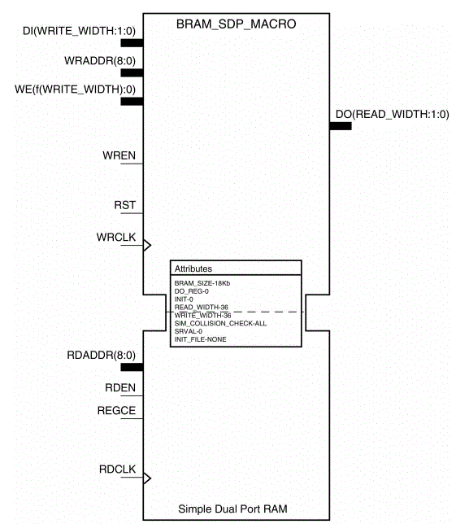
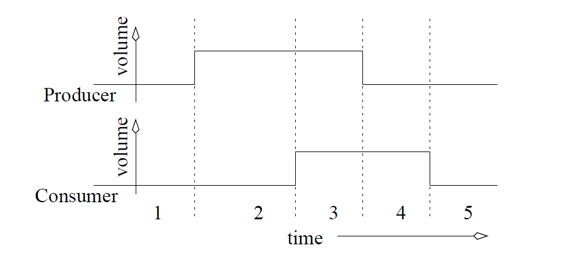
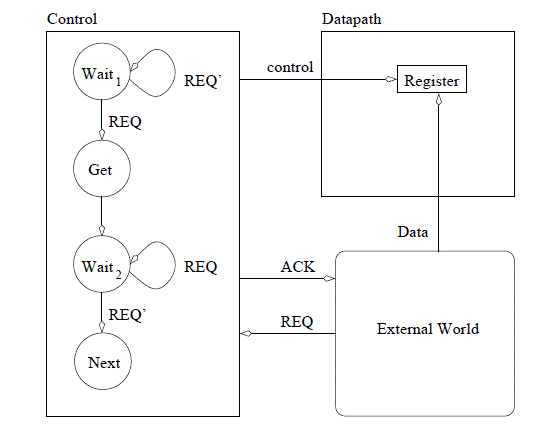

The Spartan 6 FPGA has a lot more than just logic gates and flip flops.
There are a lot of special resources built into the chip. Access these
resources requires knowing what these resources are and how to instantiate
them in a design. Today we will talk about both.
To start your journey, you need to look through the first page of the
Spartan-6 Family Overview. The second page lists quantifies how many
of these resources our ATLYS boards have. For reference we are using the
XC6SLX45 chip. It has some pretty impressive stats. Of significance
to us is the block rams and the DSP blocks.
In our upcoming Lab2, you will need a large RAM to store 18-bit audio samples
streaming in from the ATLYS board. The Xilinx FPGA on our board, a Spartan 6,
contains built in block RAMs (BRAMs). You can select of the three main BRAMS
configuration (BRAM_SDP_MACRO, BRAM_SINGLE_MACRO, BRAM_TDP_MACRO) available
in the UNIMACRO library. We will be using a BRAM_SDP_MACRO in our design. According
Spartan-6 Libraries Guide for HDL Designs.
FPGA devices contain several block RAM memories that can be configured as general-purpose 18Kb or 9Kb RAM/ROM memories. These block RAM memories offer fast and flexible storage of large amounts of on-chip data. Both read and write operations are fully synchronous to the supplied clock(s) of the component. However, READ and WRITE ports can operate fully independently and asynchronously to each other, accessing the same memory array. Byte-enable write operations are possible, and an optional output register can be used to reduce the clock-to-out times of the RAM.
A schematic symbol of this memory is shown below. Note, that inputs are on the
left and outputs on the right. The left top side lists all the write functions
left left, the reads. Each of the three types of BRAMs are highly configurable,
so much so that it can be overwhelming to the new designer.

An example instantiation of the BRAM is given in the code block below. Note all
the configuration is done in the generic section, while the port section takes
care of the actual wiring of the BRAM into your design. Remember that this call
is actually mapping directly onto a pre-defined BRAM inside the Spartan 6 chip.
----------------------------------------------------------------------------
-- Reference: Spartan-6 Libraries Guide for HDL Designs
-- UG615 (v 12.4) December 14, 2010
-- Note: Do not waste your time with the December 2, 2009 version
-- Page: 10
-----------------------------------------------------------------------------
sampleMemory: BRAM_SDP_MACRO
generic map (
BRAM_SIZE => "18Kb", -- Target BRAM, "9Kb" or "18Kb"
DEVICE => "SPARTAN6", -- Target device: "VIRTEX5", "VIRTEX6", "SPARTAN6"
DO_REG => 0, -- Optional output register disabled
INIT => X"000000000000000000", -- Initial values on output port
INIT_FILE => "NONE", -- Not sure how to initialize the RAM from a file
WRITE_WIDTH => 18, -- Valid values are 1-36
READ_WIDTH => 18, -- Valid values are 1-36
SIM_COLLISION_CHECK => "NONE", -- Simulation collision check
SRVAL => X"000000000000000000") -- Set/Reset value for port output
port map (
DO => readOutput, -- Output read data port, width defined by READ_WIDTH parameter
RDADDR => vecAddrRead, -- Input address, width defined by port depth
RDCLK => clk, -- 1-bit input clock
RST => n_reset, -- active high reset
RDEN => cw(5), -- read enable
REGCE => '1', -- 1-bit input read output register enable - ignored
DI => writeInput, -- Input data port, width defined by WRITE_WIDTH parameter
WE => cw(3 downto 2), -- since RAM is byte read, this determines high or low byte
WRADDR => vecAddrWrite, -- Input write address, width defined by write port depth
WRCLK => clk, -- 1-bit input write clock
WREN => cw(4)); -- 1-bit input write port enable
Now an activity for the class. Determine what will happen inside the RAM
defined above when subject to the following signals.
-- vecAddrRead = vecAddrWrite - 1
-- writeInput <= "10101010101010" & vecAddrWrite(3 downto 0);
cw(5) <= '1', '0' after 7 us, '1' after 8 us; -- READ ENABLE
cw(4) <= '1', '0' after 3 us, '1' after 4 us; -- WRITE ENABLE
cw(3 downto 2) <= "11", "10" after 4 us, "01" after 5 us, "11" after 6us; -- BYTE WRITE ENABLE
cw(1 downto 0) <= "01"; -- COUNTER CONTROL
Packages
Packages are a nice way to hide lots of component declarations that
go between the architecture statement and the BEGIN statement. One
of the main contributers of complexity in software is redundancy.
In this scenario, having an entities declaration in several different
architectures is redundant. Pulling all these declarations into one
file would eliminate this redundancy and make the code much easier
to maintain and update. So how do you create a pages.
Here is a package that I created
for lab2.
Then anytime you want to use this package, just include the following
at the top of your file.
use work.lab2Parts.all; -- all my components are declared here
2-Line Handshake
In most cases, digital systems require data from the external world in order
to perform their tasks. In cases where the digital system and the outside
word operate on independent clocks, the transfer of data is complicated by
the lack of a common clock. To understand how a reliable transfer of data
can be performed in this circumstance, consider the following scenario of a
producer trying to deliver a packet of candies to a consumer.
Two participants associate in the scenario called producer and consumer.
The producer has a bag of 32 candies; (the number of candies in the bag
really does not matter). The candies are to be given to the consumer and the
producer is to receive an acknowledgment from the consumer of their receipt.
Unfortunately, the producer is blind-folded and is wearing a rather thick pair
of ski mittens so they do not know when the consumer has actually taken
the candies. The producer and consumer must synchronize the transfer
of candies using signals sent with their voices. The transfer protocol is
described in the following four steps:
The producer stumbles into consumer's room and calls out, "Candies,
Candies, . . ." (non-stop).
The consumer gets up, takes the box of candies and then calls out,
"Received, Received, . . ." (non-stop).
The producer upon hearing the consumer has received the candies
stops calling "Candies" and walks out of the room.
The consumer upon hearing the producer has stopped calling out
"Candies," stops calling out "Received."
Figure 12.1 shows a timing diagram for this scenario. During the time
interval labeled 1, both the producer and consumer are quiet. Perhaps the
producer is negotiating through the consumer's rooms. During time interval
2, the producer is calling out and the consumer is quiet. The consumer, may
be busy with some other task, and is not able to attend to the producer.
At the end of time interval 2, the consumer has taken the candies. During
time interval 3, perhaps the most annoying time in the scenario, both the
producer and consumer are calling out. At the end of time interval 3, the
producer has heard the consumer and is about to stop offering candies. At
the beginning of time interval 4, the producer becomes quiet; the producer
knows for certain the consumer has received the box because the consumer
is calling out "Received." At the end of time interval 4, the consumer hears
the producer has stopped calling out "Candies." At the beginning of time
interval 5, the consumer stops calling out. The consumer knows that the
producer knows that the consumer got the box of candies because the producer
has acknowledged the consumer's thanks by being quiet.
In the above scenario, the producer is the active agent, the entity initiating
the exchange of candies and the consumer is the passive agent, the
agent that waited for the candies. This protocol, regardless of who is the
producer or consumer, is called a two-line handshake because the communicating
agents must have two, coordinating signals, Request (REQ) and
Acknowledge (ACK) and at least one data line. The REQ signal is used
by the active agent to signal a readiness to perform a data transfer. The
ACK signal is used by the passive agent to acknowledge the data has been
transferred. An algorithm description of the two-line handshake for a digital
circuit which is the passive consumer is shown below.
 Figure 12.2: A timing diagram of a data transfer between a producer and a consumer.
1. while(REQ==0); // Do nothing but wait
2. register = DATA // Latch the data
3. ACK=1; // Acknowledge the producer
4. while(REQ==1); // Do nothing but wait
5. ACK=0; // Acknowledge the producer
In Line 1 and Line 4, the body of the while loops are empty; there is
nothing to do but wait. Furthermore, with respect to the external world,
the ACK and REQ signals act as status and command bits,
respectively. The algorithm above is translated into datapath and control
in Figure 12.3.
 Figure 12.3: The datapath and control components required to implement
a two-line handshake where the digital system is the passive consumer.
The most important feature of the control unit are the two self-arcs at
states Wait1 and Wait2. In state Wait1, the control unit does nothing
except check the value of the REQ signal. As long as REQ=0, the control
unit waits. As soon as REQ=1, the control unit proceeds to state Get where
it enables the register to load the external data. The control unit spends
a single clock cycle in this state before moving to state Wait2. In state
Wait2, the control unit asserts and acknowledges, (ACK=1), and waits for
the REQ signal to drop. It is important to assert an acknowledge only
after latching the data into the register. If an acknowledge is sent in the
Get state, then it is possible for a very fast external world to be able to
change the data signal before the end of the circuit's clock cycle, giving the
wrong data. When the REQ signal is dropped, the control unit goes to state
Next which represents some further actions expected of the digital system
to perform. In state Next, (and in all other states exceptWait2), the ACK
signal should be set to 0.
Notice that no matter how different the clock speeds are between the
Figure 12.3: The datapath and control components required to implement
a two-line handshake where the digital system is the passive consumer.
producer and the consumer, this circuit transfers data correctly. If the
consumer is faster, it will wait patiently for the producer. If the consumer
is slower, it will work as fast as possible to latch the data.
Datapath and Control Exercise
Build a circuit to read in an 8-bit KEY using a two-line handshake;
the circuit is a passive consumer. The circuit should
search an 18kx18 RAM, counting the number of words that match
KEY. Assume the RAM is preloaded with data and it can respond to a
read request with valid data within one clock
1. while(1) {
2. while(REQ == 0);
3. KEY = data;
4. ACK = 1;
5. while(REQ == 1);
6. ACK = 0;
7. match = 0;
8. for(i=0; i<8191; i++) {
9. MBR = RAM[i];
10. if (MBR == KEY) {
11. match=match+1;
12. } // end if
13. } // end for
14. } // end while